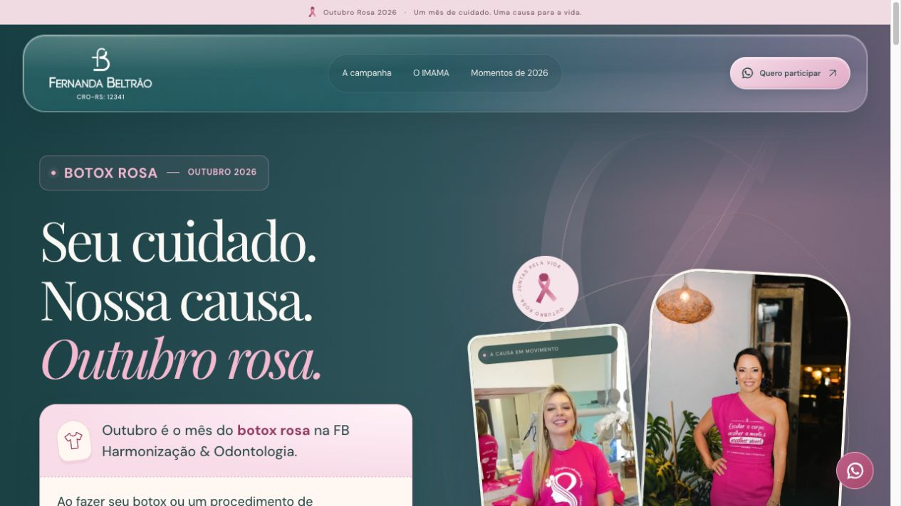
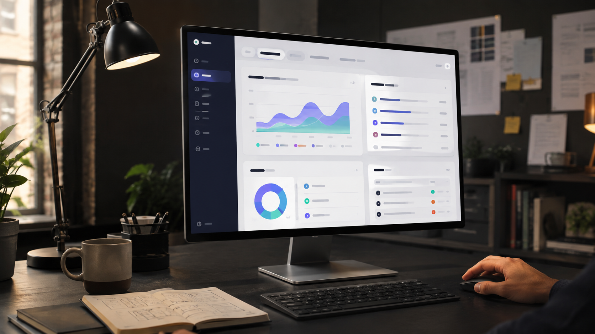
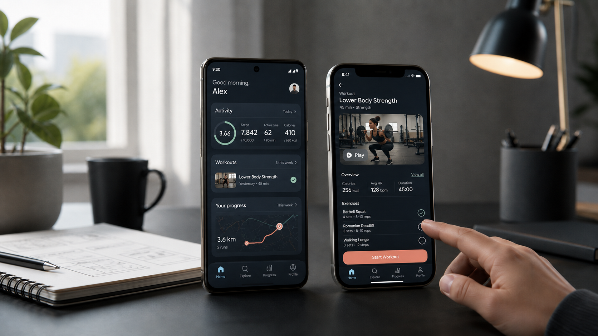
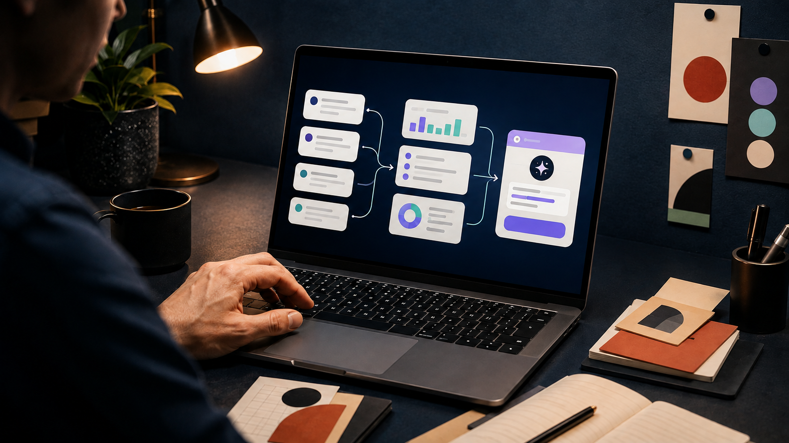
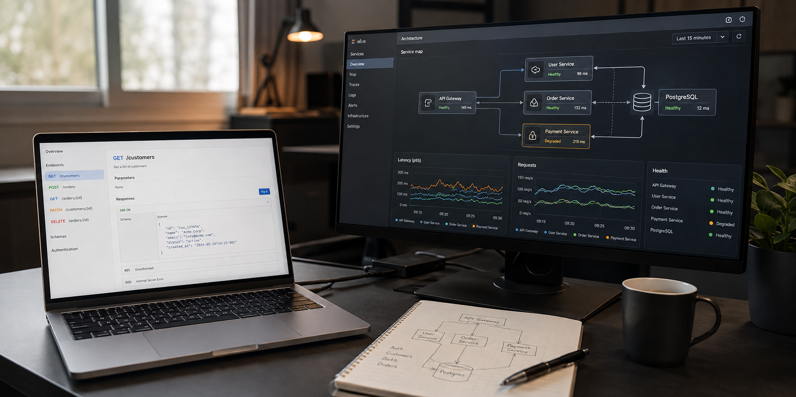

Entender o processo
Pessoas, regras, dados e gargalos. Primeiro, entender o que precisa mudar na operação.
Glauber Barcelos · Software Engineer
Conecto conhecimento de processos, engenharia de software e inteligência artificial para transformar desafios reais em soluções que melhoram a performance e reduzem custos.
PROCESSOS + ENGENHARIA + IA
EXPERIÊNCIA QUE
JÁ VIROU ENTREGA
ENGENHARIA NA ERA DA IA
Construir ficou mais rápido. Entender o processo, decidir a arquitetura e validar o resultado continua exigindo experiência. É nessa conexão que eu trabalho.
Pessoas, regras, dados e gargalos. Primeiro, entender o que precisa mudar na operação.
Arquitetura, integrações e critérios de qualidade para transformar o contexto em um produto confiável.
IA para ampliar a execução, automatizar etapas e apoiar decisões, com limites e revisão humana.
Performance e custo orientam a decisão. Evidências orientam a evolução.
Vamos conectar isso ao seu negócioProcessos, pessoas, gargalos e oportunidades. A decisão técnica começa aí — e precisa fazer sentido no caixa, na operação e na experiência do cliente.
Investigo o fluxo crítico, meço os gargalos e ajusto APIs, dados e experiência. A arquitetura acompanha a necessidade real do produto.
Cada projeto parte de uma linha de base. Melhorias são medidas no contexto da sua operação.
02 / ENTREGAS SELECIONADAS
Da saúde à expansão de marcas: software que conecta pessoas, simplifica jornadas e transforma um contexto complexo em uma experiência útil.

01 / 08
MOBILEUma jornada crítica, em que geolocalização, tempo real e simplicidade precisam funcionar quando cada segundo importa. O produto conecta chamada, localização e atendimento em uma experiência simples para quem precisa agir rápido.

02 / 08
APPExperiência digital para beneficiários com cobertura, autorizações e serviços no mesmo lugar. Uma jornada mais clara para acessar informações, serviços e próximos passos sem fricção.

03 / 08
WEBComunicação técnica traduzida em benefícios comerciais para uma plataforma SaaS de provedores de internet. A página transforma uma oferta complexa em uma conversa comercial mais direta.

04 / 08
WEBLanding page de captação de franqueados com narrativa de negócio, prova de mercado e caminho claro até o lead. Cada bloco foi pensado para reduzir dúvidas e acelerar o próximo contato.

05 / 08
WEBExperiência comercial para apresentar o modelo de franquia, organizar indicadores e conduzir o empreendedor até o próximo passo com mais confiança.

06 / 08
WEBLanding page da campanha Botox Rosa, conectando a identidade da clínica ao Outubro Rosa. A experiência reúne o propósito da iniciativa, fotos e vídeos dos encontros, dúvidas frequentes e contato pelo WhatsApp em uma jornada clara para quem quer participar.

07 / 08
IAMatch inteligente entre startups e investidores: da hipótese ao MVP com base para aprender e crescer. A experiência aproxima descoberta, critérios e conexão em um só fluxo.

08 / 08
WEBLanding page para o Summit Empreender 40+, organizando proposta, palestrantes, programação e conversão de ingressos em uma jornada de evento clara.

03 / QUEM PENSA TAMBÉM CONSTRÓI
Sou Glauber Barcelos, engenheiro de software sênior. Ao longo de mais de duas décadas, atuei em produtos digitais, saúde, startups, operações críticas e plataformas que precisam funcionar de verdade.
Eu me envolvo no contexto antes de propor uma solução. Conecto visão de produto, arquitetura e execução para priorizar o que melhora a operação — com comunicação direta, decisões claras e responsabilidade pela entrega.
04 / COMPETÊNCIAS CONECTADAS
Você não precisa comprar “horas de desenvolvimento”. Precisa de uma solução que ajude a vender, operar melhor, validar uma ideia ou escalar com segurança.

Plataformas, portais, dashboards e jornadas comerciais desenhados para validar a oferta, organizar a operação e escalar com IA aplicada.

Aplicativos multiplataforma para clientes e equipes em campo, conectados ao seu produto e com assistência de IA onde a jornada pede velocidade.

Automação, assistentes, busca inteligente e decisões orientadas por dados — IA onde ela gera valor de verdade.

Backend, integrações, observabilidade e performance para produtos que precisam ser confiáveis hoje e amanhã.
Uma visão sênior para tirar decisões do campo das opiniões: diagnóstico, roadmap, priorização, revisão de arquitetura e condução hands-on.
Uma única linha de execução para conectar negócio, tecnologia e resultado.
Responda quatro perguntas para organizar a conversa. As respostas ficam apenas nesta página, no seu navegador. Só serão compartilhadas com o WhatsApp se você abrir o link; o envio depende de você.
Prefere seguir direto? Para um SaaS, defina o problema e quem pagará por ele. Para um app, descreva a rotina e os dispositivos. Para arquitetura ou IA, traga um gargalo e um exemplo de uso.
Conversar sobre meu contexto06 / VAMOS CONSTRUIR O PRÓXIMO PASSO
Um processo lento. Um custo que cresceu. Um produto esperando para sair do papel. Conte o contexto e vamos encontrar uma direção para transformar isso em entrega.
Você fala direto com quem pensa produto, arquitetura e execução — do primeiro recorte à evolução.